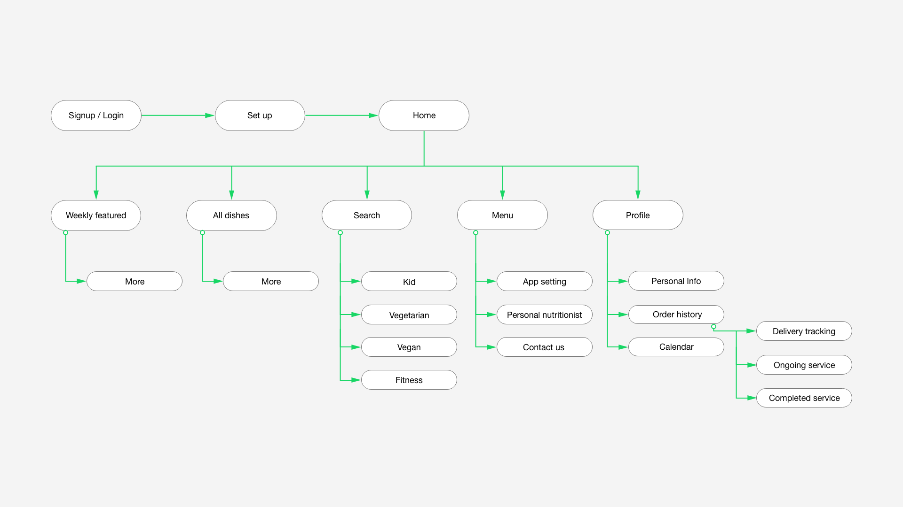
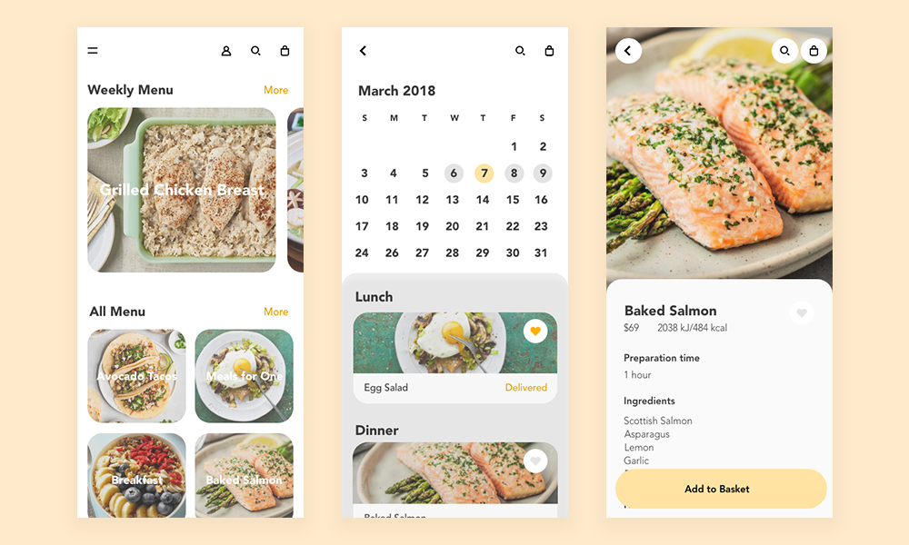

Hello Healthie
UX Design Challenge
User experience design
Human-centred design
Leann Chen
Rosalyn Chun

This was a 7-week online course provided by +Acumen and IDEO.org. Throughout this course, I was introduced to different methods and tools of human-centred design and tackled a real-world design challenge with my teammates by going through the process of design research, concept generation and rapid prototyping.
01
Mini Design Challenge
One of the mini design challenges was to brainstorm “How might we design a service to improve health in everyday places?”.
We spent 5 minutes for each place to come up with as many ideas as we could.
After that, we were asked to vote and select the best two ideas, Housework calories metre and Food pyramid shelf, for making prototypes. This learning through making process taught me how to use simple tools to do quick prototyping and validate our ideas.

Housework calories metre

Food pyramid shelf
02
Defining Opportunity
In our final design challenge, we chose the topic of “How might we provide healthier food options for people in need?”.
Brainstorming
We first brainstormed the problems which different stakeholders might encounter and found that business sector would be our target to improve the current situation.

Interview
We interviewed 5 people in total to gain insights from their eating habits. We drew some interesting findings from each of the respondents, transcribed each of the points on a piece of memo and placed it under each respondent's name.

Major takeaways from interview
The memos were then categorised. We picked the three most important points as the main objectives to develop our concept:
1. Prefer healthy ingredients, methods and seasoning
2. Prefer fast and simple
3. Take healthy advice from professionals
03
Ideation
We then converted the insights into a concept, Hello Healthie, which is an app collaborating with nutritionists, chefs, local farms to provide menu customizing and ingredient delivery service in Hong Kong. It promotes healthy cooking and balanced diet for Hong Kong people who are too busy to prepare meals.
User Flow
We first considered the functions to be included in the app and drafted the user flow.

Low Fidelity Prototype
After finishing the user flow, we created low fidelity prototype to visualise the user interface of the app.
High Fidelity Prototype
Because of the time constraint,
